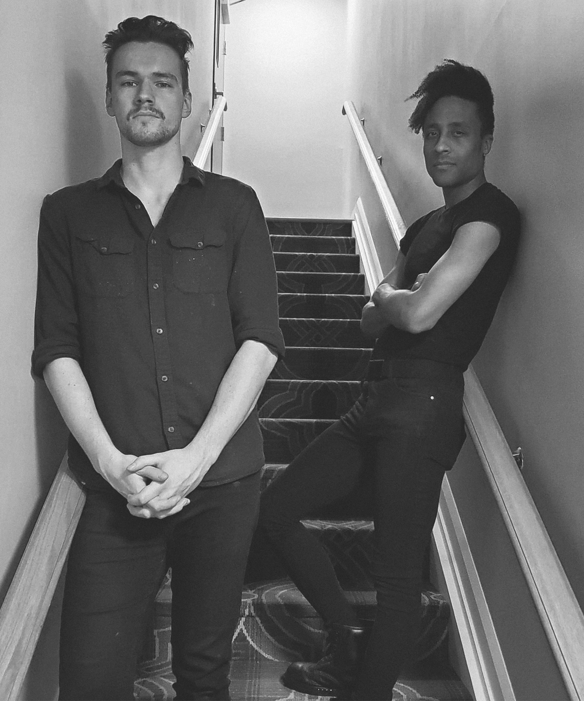
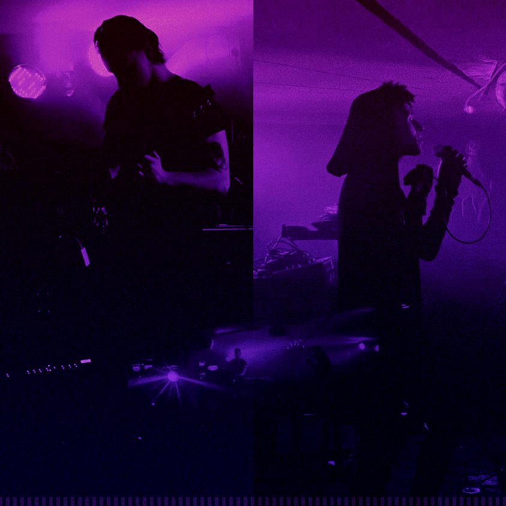

ABOUT

In what started as two attendees at a Clan of Xymox concert during the winter of 2019, Pierson Kardas and Chandler Goudreau - Patterson left inspired with the revelation to start their very own gothic band.
A couple months later, the COVID-19 pandemic would then hit the world—and what with two best friend roommates trapped inside due to the lockdowns, there was now an abundance of time to focus on and release an EP and an album in the band’s first year.
Rather than being strictly a band that only releases music online, in 2022, THE SEANCE has expanded with merch production and live performances. Having played with the Juno-nominated, ODONIS ODONIS, and The City Gates. To date, THE SEANCE have played a total of 3 live shows.
In the past, the two have collaborated on a few other music projects, but the reception was unlike anything compared to what they have received with THE SEANCE. The band has been known for their easy-going approach with danceable synth beats contrasted with macabre vocals and lyrics—it's an interesting sonic cocktail for goths and casual listeners alike.